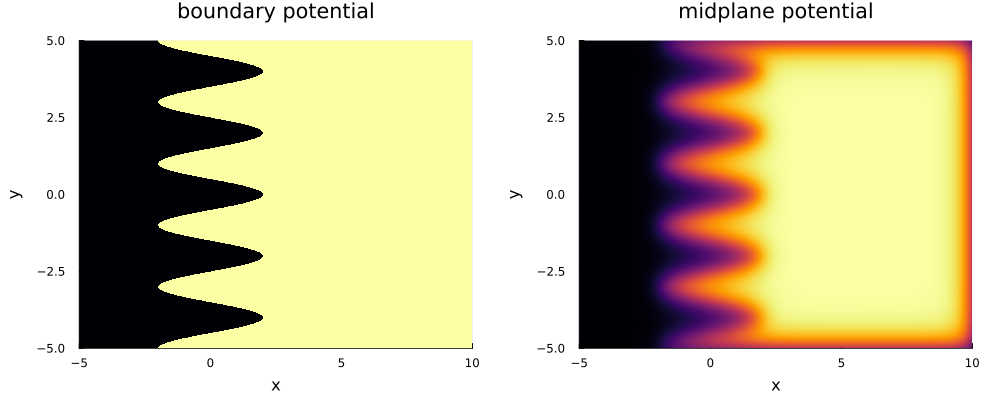

2. Electrostatic fields
Consider a planar electrostatic trap of infinite extent with electrodes at $z = 0$ and $z = 1$. If the potential on the bottom electrode $z=0$ is given by a Dirac-delta distribution at $x=0, y=0$ then the potential in the interior of the electrostatic trap is given by the kernel $K(x, y, z)$.
If the potential on the bottom electrode is given by $f(x,y)$ we can compute the electrostatic field in the trap using a 2-dimensional convolution over the $x$ and $y$ coordinates,
\[\phi(x, y, z) = \iint K(x - x', y - y', z) f(x,y) dx' dy',\]
where $0 < z < 1$. If the potentials on the top and bottom plates are identical then we can add the contribution of each plate as,
\[\phi(x, y, z) = \iint \left ( K(x - x', y - y', z) + K(x - x', y - y', 1 - z) \right ) f(x,y) dx' dy'.\]
where $0 < z < 1$.
We can use the KernelConvolution type to perform this 2-dimensional convolution as follows.
using Plots
using Plots.Measures
using uESTplanar
# 1. Define convolution kernel
z = 0.5 # midplane of the electrostatic trap
kconv = KernelConvolution(
range(-5, 10; step=0.005),
range(-5, 5; step=0.005),
(x, y)-> K(x, y, z) + K(x, y, 1 - z)
)
# 2. Define a potential function with a wavy boundary
x0 = 0.0 # position of interface
λ = 2.0 # wavelength of variation
A = 2.0 # amplitude of variation
wavy_boundary = (x, y) -> (A * cos(2π / λ * y) < x - x0) ? 1.0 : 0.0
# 3. Compute potential over grid of convolution
boundary_matrix = wavy_boundary.(kconv.xs, kconv.ys')
# 4. Apply convolution operator
potential = kconv(boundary_matrix)
# 5. Plot potential
(; xs, ys) = kconv
pkws = (
xlabel="x",
ylabel="y",
xlims=(-5, 10),
ylims=(-5, 5),
size=(600, 400),
colorbar=false,
margin=5mm,
)
p1 = heatmap(
xs, ys, transpose(boundary_matrix);
title="boundary potential",
pkws...
)
p2 = heatmap(
xs, ys, transpose(potential);
title="midplane potential",
pkws...
)
p = plot(p1, p2; layout=(1, 2), size=(1000, 400))